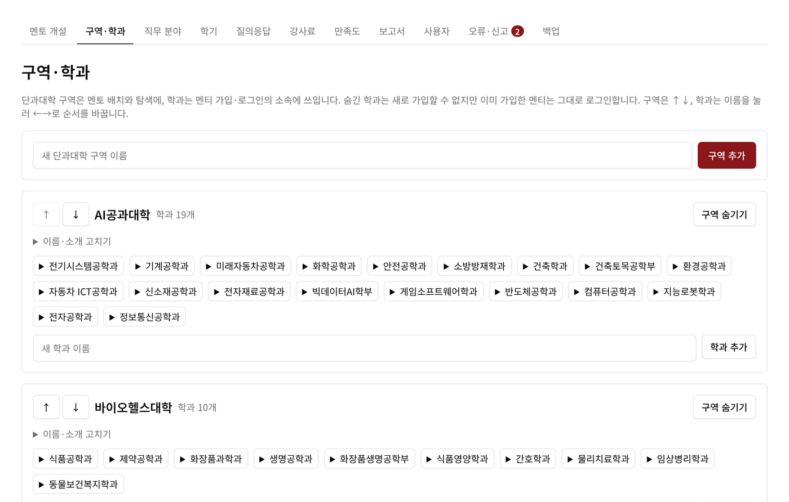
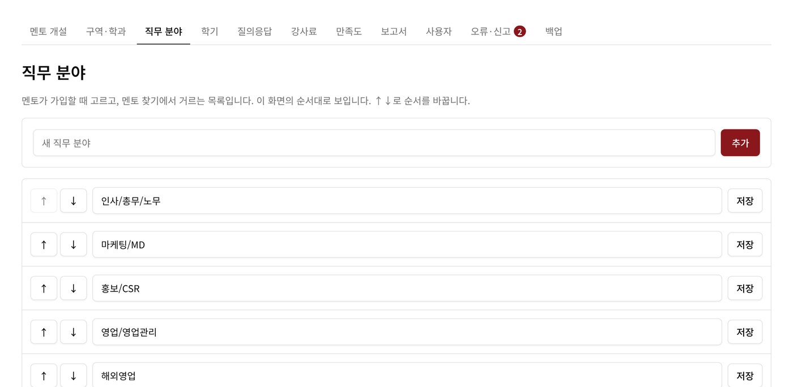
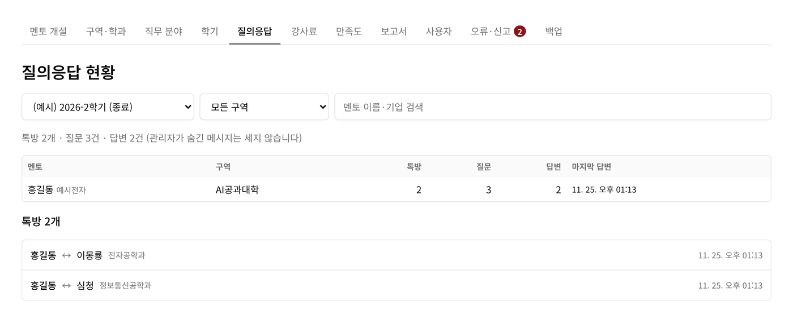
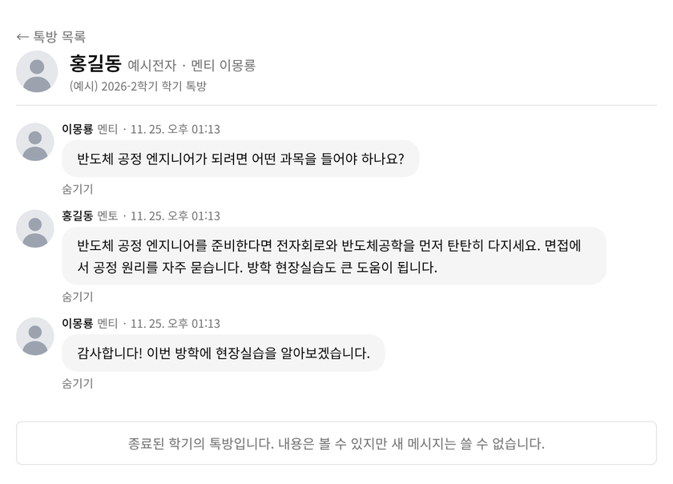
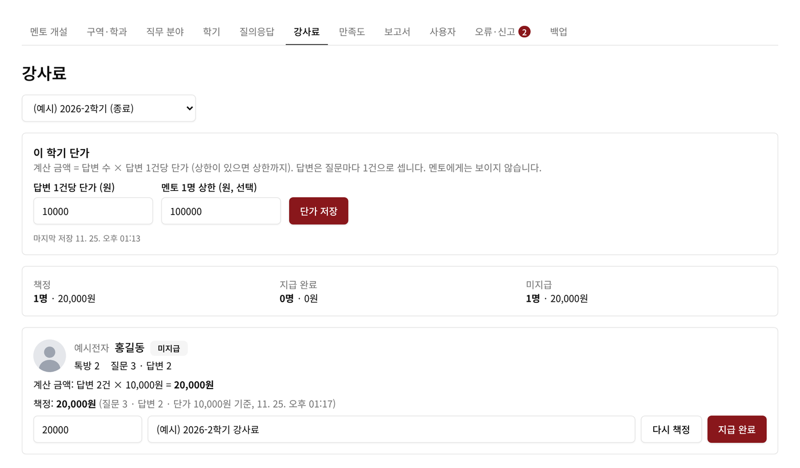
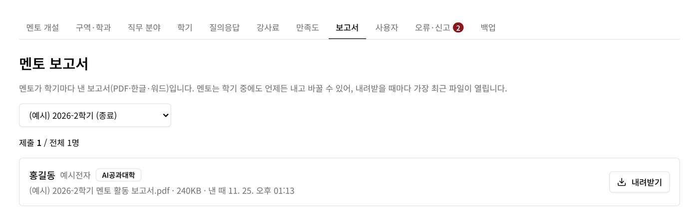
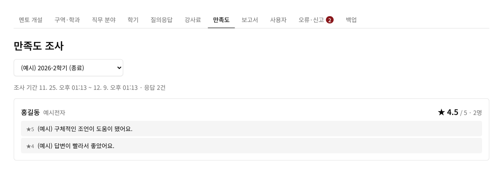
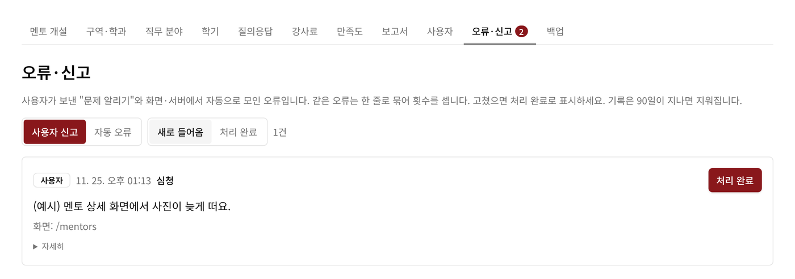
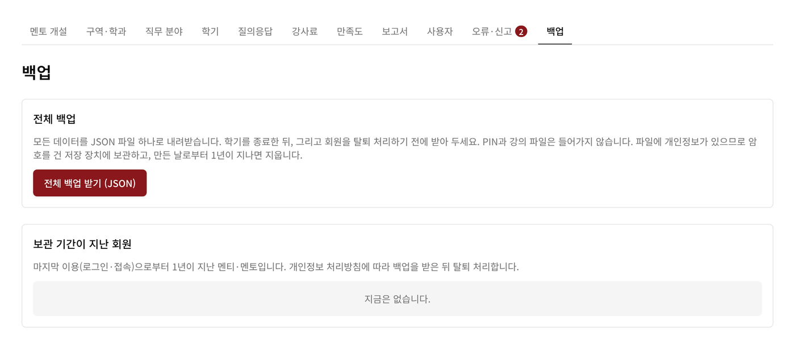

② 관리자 계정 만들기 — 이름(필요하면 구분 문자)을 넣고 관리자 만들기. 임시 PIN을 전하면 새 관리자는 처음 로그인할 때 PIN을 바꿉니다.
③ 사용자 목록에서 할 수 있는 일 (위쪽 탭: 전체 / 멘티 / 멘토 / 관리자)
버튼
하는 일
PIN 초기화
PIN을 잊은 사람에게 임시 PIN을 만들어 줍니다. 화면에 한 번만 보이므로 바로 본인에게 전합니다. 다음 로그인 때 새 PIN으로 바꾸게 됩니다.
▸ 이름·소속 바꾸기
잘못 가입한 이름이나 학과를 고칩니다. 바꾼 이름·학과로 로그인하게 되므로 본인에게 알려 줍니다.
탈퇴 처리
본인이 요청했을 때만. 먼저 전체 백업을 받고, 이름을 입력해 확인합니다. 그 사람의 질문·답변, 강의, 수강·만족도 기록, (멘토면) 보고서가 모두 지워지고 되돌릴 수 없습니다.
목록의 작은 표시: 임시 PIN 아직 PIN을 안 바꿈 · 동의 전 아직 첫 로그인·동의 안 함 · 동의하면 자동 공개 동의하면 바로 공개될 멘토
5-4구역·학과 관리자 → 구역·학과

그림 5-4 구역·학과 화면
구역 추가: 맨 위 칸에 단과대학 이름을 넣고 구역 추가.
학과 추가: 구역 상자 아래 "새 학과 이름"에 넣고 학과 추가.
순서: 구역은 이름 옆 ↑↓, 학과는 학과 이름(▸)을 눌러 펼친 뒤 ←→로 바꿉니다.
숨기기: 구역 숨기기 또는 학과를 펼쳐 숨깁니다. 숨긴 학과는 가입 화면에 나오지 않지만, 이미 가입한 멘티는 그대로 로그인합니다.
이름 고치기: ▸ 이름·소개 고치기.
학과는 지우지 말고 숨기세요학과는 멘티의 로그인 소속입니다. 학과 이름을 바꾸면 그 학과 멘티의 로그인 소속도 같이 바뀝니다.
5-5직무 분야 관리자 → 직무 분야

그림 5-5 직무 분야 화면
멘토가 가입할 때 고르고, 멘토 찾기에서 거르는 목록입니다. 맨 위 칸에 넣고 추가, 이름을 고친 뒤 저장, ↑↓로 순서를 바꿉니다.
5-6질의응답 관리자 → 질의응답

그림 5-6 질의응답 현황. 학기·구역을 고르거나 멘토 이름·기업으로 찾습니다
위쪽에서 학기를 고릅니다(처음에는 현재 학기).
표에서 멘토별 톡방·질문·답변 수와 마지막 답변 시각을 봅니다. 답변이 0이거나 오래된 멘토에게는 따로 연락합니다.
아래 톡방 목록에서 톡방을 누르면 대화 내용을 볼 수 있습니다.

그림 5-7 관리자가 본 톡방. 메시지 아래 "숨기기"로 부적절한 메시지를 숨깁니다
건수 세는 법
질문 1건: 멘티가 연달아 보낸 메시지 묶음 하나
답변 1건: 질문 뒤에 멘토가 연달아 보낸 메시지 묶음 하나. 여러 번 나눠 보내도 1건, 질문 없이 멘토가 먼저 보낸 메시지는 세지 않음
관리자가 숨긴 메시지는 세지 않습니다. 멘토 답변은 공백을 뺀 50자 이상이어야 보낼 수 있습니다.
5-7강사료 관리자 → 강사료

그림 5-8 강사료 화면. 단가 저장 → 계산 금액 확인 → 책정 → 지급 완료
학기 고르기: 보통 학기를 종료한 뒤 그 학기를 고릅니다. 진행 중인 학기는 건수가 더 늘 수 있습니다.
단가 저장: "답변 1건당 단가"와 "멘토 1명 상한"(비우면 상한 없음)을 원 단위로 넣고 단가 저장. 단가는 학기마다 따로 저장되고, 멘토에게는 보이지 않습니다.
계산 금액 확인: 멘토마다 "계산 금액: 답변 2건 × 10,000원 = 20,000원"처럼 나오고, 금액 칸에 미리 채워집니다.
책정: 금액을 확인하고(필요하면 고쳐서) 메모를 남긴 뒤 책정. 그때의 건수·단가·책정한 관리자·시각이 저장됩니다.
지급 완료: 실제로 지급한 뒤 지급 완료를 누르고 확인합니다. 금액·메모 칸이 잠깁니다. 잘못 눌렀으면 지급 취소 뒤 다시 책정합니다.
합계 확인: 위쪽 책정 / 지급 완료 / 미지급 칸에서 인원과 금액을 봅니다. 미지급 0명이면 그 학기 지급이 끝난 것입니다.
표시 문구"계산 금액과 다르게 책정함" — 계산 금액과 다른 금액으로 책정했을 때 · "책정 뒤 건수가 바뀌었습니다" — 책정 뒤 메시지를 숨기는 등으로 건수가 달라졌을 때. 확인하고 다시 책정합니다.
5-8보고서 관리자 → 보고서

그림 5-9 보고서 화면. 제출 수와 멘토별 제출 파일
학기를 고릅니다. 위쪽 "제출 N / 전체 M명"으로 낸 사람 수를 봅니다.
낸 멘토는 파일 이름·크기·낸 때가 보이고 내려받기로 받습니다. 안 낸 멘토는 "미제출"로 보입니다.
미제출 멘토에게 연락해 내 멘토 페이지 → 학기 보고서에서 올리도록 안내합니다.
알아 둘 점
받는 형식: PDF, 한글(HWP·HWPX), 워드(DOC·DOCX), 20MB까지. 학기마다 1건이며 멘토가 다시 올리면 바뀝니다.
관리자는 보고서를 고치거나 지울 수 없습니다. 잘못 낸 보고서는 멘토가 직접 바꿉니다.
강사료와는 연결되어 있지 않습니다.
전체 백업에는 보고서 파일이 들어가지 않습니다. 학기 말에 파일을 내려받아 따로 보관하세요.
5-9만족도 관리자 → 만족도

그림 5-10 만족도 화면. 멘토별 평균 별점과 응답 수, 의견
학기를 종료하면 조사가 열리고, 조사 마감일 뒤에 결과를 확인합니다. 진행 중인 학기를 고르면 "학기를 종료하면 만족도 조사가 열립니다"가 보입니다. 응답자 이름은 나오지 않습니다. 결과는 멘토에게 보이지 않습니다.
5-10오류·신고 관리자 → 오류·신고

그림 5-11 오류·신고 화면. 메뉴 옆 빨간 숫자는 처리 전 건수
사용자 신고: 사용자가 화면 아래 "문제 알리기"로 보낸 글. 보낸 사람과 화면 주소가 함께 보입니다.
자동 오류: 화면·서버에서 자동으로 모인 오류. 같은 오류는 한 줄로 묶어 횟수를 셉니다.
고쳤거나 확인을 마쳤으면 처리 완료를 누릅니다. 기록은 90일 뒤 자동으로 지워집니다.
무슨 문제인지 모르겠으면 ▸ 자세히를 펼쳐 그 내용을 개발 담당자에게 그대로 전합니다.
5-11백업 관리자 → 백업

그림 5-12 백업 화면
전체 백업 받기 (JSON)을 누르면 hoseo-mentor-backup-날짜-시각.json 파일이 내려받아집니다.
백업을 받으면 버튼 아래에 표 목록이 나옵니다. 엑셀로 볼 표가 필요하면 그 표의 CSV를 누릅니다(보기용. 되살릴 때는 JSON을 씁니다).
"보관 기간이 지난 회원"에는 마지막 이용 후 1년이 지난 멘티·멘토가 나옵니다. 백업을 받은 뒤 사용자 화면에서 탈퇴 처리합니다.
백업에 들어 있음
들어 있지 않음
설정, 구역·학과·직무 분야, 회원(이름·소속·역할), 프로필, 동의 기록, 학기, 톡방·메시지, 강의·수강, 강사료(단가·지급 여부), 만족도, 보고서 목록
PIN, 강의 자료 파일, 프로필 사진 파일, 보고서 파일
백업 파일 보관이름·소속·질문·답변이 들어 있는 개인정보 파일입니다. 암호를 건 저장 장치나 접근 권한을 정한 학교 공유 드라이브에 두고, 개인 메신저·메일로 보내지 않습니다. 만든 날로부터 1년이 지나면 지우고 휴지통도 비웁니다. 누가 언제 받았는지 간단히 적어 둡니다.
6. 이런 요청이 오면 (사용자 문의 처리)
요청
처리
PIN을 잊었어요
사용자 → 그 사람의 PIN 초기화 → 화면에 한 번만 보이는 임시 PIN을 본인에게 전합니다. 다음 로그인 때 새 PIN으로 바꾸게 됩니다.
로그인이 안 돼요
소속(멘토는 "멘토", 멘티는 자기 학과), 이름(구분 문자 포함), PIN을 다시 확인하게 합니다. 자동 입력 방지 칸이 "성공"이 된 뒤 버튼을 눌렀는지 확인합니다. 그래도 안 되면 PIN 초기화.
이름이나 학과를 잘못 가입했어요
사용자 → 이름·소속 바꾸기. 바뀐 이름·학과로 로그인하게 된다고 알려 줍니다.
같은 이름이 있다고 가입이 안 돼요
가입 화면이 구분 문자(영문·숫자 1~3자)를 붙이라고 안내합니다. 예: 홍길동A. 로그인할 때도 이름칸에 붙여 씁니다.
탈퇴하고 싶어요
본인 확인 → 전체 백업 → 사용자 → 탈퇴 처리(이름 입력). 되돌릴 수 없습니다. 화면에는 본인 탈퇴 기능이 없습니다.
내 정보를 보여 주세요 / 고쳐 주세요
개인정보 열람·정정 요청입니다. 백업 CSV에서 그 사람의 기록을 찾아 전하거나, 이름·소속 바꾸기로 고칩니다. 지체 없이 처리합니다.
멘토: 공개되고 싶지 않아요
멘토 개설에서 그 멘토를 비공개로 돌립니다.
멘토: 답변이 안 보내져요
답변은 공백을 뺀 50자 이상이어야 보낼 수 있다고 안내합니다.
보고서를 어디에 내나요? / 잘못 냈어요
멘토가 직접 내 멘토 페이지 → 학기 보고서에서 학기를 고르고 파일을 올립니다. 다시 올리면 바뀌고, 지우기로 지울 수 있습니다.
멘티: 질문을 못 하겠어요
학기에 현재 학기가 지정되어 있는지 확인합니다. 학기를 종료한 뒤 다음 학기를 지정하지 않았으면 질문할 수 없습니다.
알림을 받고 싶어요 / 앱처럼 쓰고 싶어요
멘티는 마이페이지, 멘토는 내 멘토 페이지의 "새 메시지 알림"에서 알림 받기를 켭니다. 같은 곳의 앱으로 설치로 홈 화면에 아이콘을 만듭니다. 아이폰은 사파리에서 홈 화면에 추가한 뒤 그 아이콘으로 열어야 알림을 켤 수 있습니다.
7. 정기적으로 할 일
언제
할 일
매주 (학기 중)
오류·신고 메뉴의 빨간 숫자 확인, 질의응답에서 답변이 밀린 멘토 확인
학기 시작
학기 만들기·현재 학기 지정, 새 멘토 개설, 재학생 안내
학기 끝
학기 종료 → 보고서 확인·파일 보관 → 만족도 확인 → 강사료 책정·지급 → 전체 백업
학기마다
백업 화면의 "보관 기간이 지난 회원" 확인 후 정리
방학 시작 전
전체 백업 한 번 더
백업 파일이 1년 지나면
그 파일 삭제(휴지통도 비우기)
관리자가 바뀔 때
새 관리자 계정을 만들고, 그만둔 관리자 계정은 다른 관리자가 탈퇴 처리
처리방침을 바꿀 때
바뀐 내용을 시행 7일 전에 알림. 개발 담당자가 처리
자동으로 돌아가는 것 (할 일 없음)
데이터베이스 정지 방지: 무료 플랜은 7일 동안 쓰지 않으면 정지되는데, 매일 한 번 자동으로 접속해 막습니다.